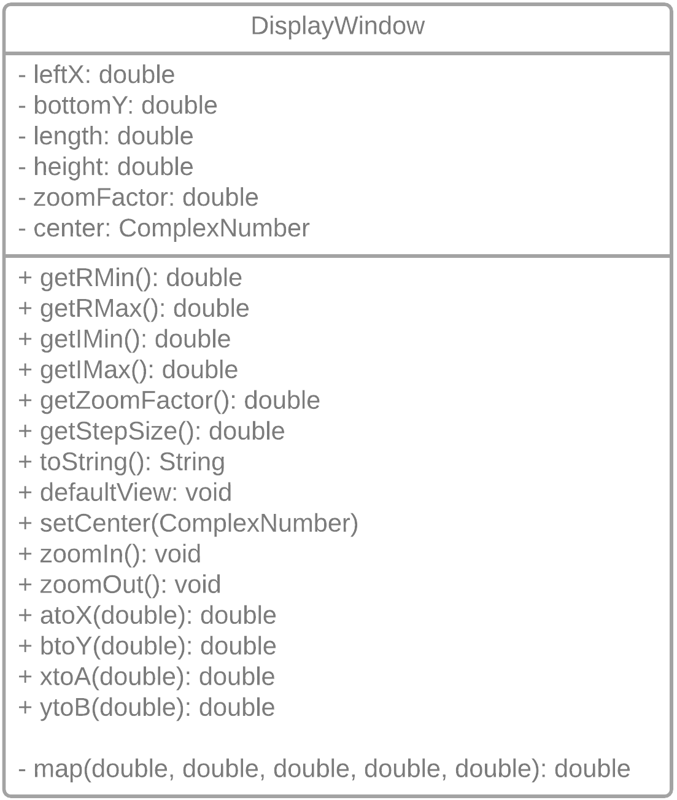

Milestone 2: Implement a basic DisplayWindow class.
This stage of the Mandelbrot/Julia Explorer adds a layer of abstraction help you keep track of the many duplicate operations and data attributes needed for two displaying two independent viewing windows.
Milestone Goals
Background
The Mandelbrot set is a set of points in a relatively small portion of the the complex plane: -2 < a < 2 and -1.5 < b < 1.5
In this picture points inside the Mandelbrot set are colored black, While points outside the Mandelbrot set are colored white. Julia sets also populate the same view of the complex plane. Each side of the canvas will need to accommodate this view of the complex plane: Creating a canvas size of 800 x 300 pixels will make our mental math a bit easier when figuring out the translation between ComplexNumber coordinates and Canvas coordinates..
\(0 + 0i\) is the center of the default view for both the Mandelbrot Set and Julia Set illustrations. Each real axis has a default range of \(-2 ≤ a ≤ 2\), while each imaginary axis has a range of \(-1.5 ≤ b ≤ 1.5\).
Before graphing the Mandelbrot and Julia sets, we’ll first have to navigate the difference between canvas coordinates and ComplexNumber coordinates.
If we create an 800 x 300 canvas to accommodate graphing the Mandelbrot set on the left side of the canvas, and the Julia set on the right side of the canvas, where would these Complex Numbers need to be graphed on the canvas?
Create a map method
Map is an operation that transforms a value from one range into a proportionally-equivalent value in a different range.
Test your map methods
Solve for a or x to create the map function Plug-in specific mins & maxes to create Mandelbrot → Screen mappings
| DisplayWindow | ComplexNumber | Screen Coordinates |
|---|---|---|
| Left | 0 + 0i | (200, 150) |
| Left | 2 - 1.5i | (400, 0) |
| Left | -2 + 0i | (0, 150) |
| Left | 1 + 0.75 | (300, 225) |
| Right | 0 + 0i | (600, 150) |
| Right | 2 - 1.5i | (800, 0) |
| Right | -2 + 0i | (400, 150) |
| Right | 1 + 0.75 | (700, 225) |
A Class Diagram of the DisplayWindow class

Data Attributes
Your DisplayWindow class should have the following data attributes:
double leftX, bottomY; //The position of the DisplayWindow
double length, height; //The length along the x-axis and height along the y-axis of the DisplayWindow
double zoomFactor; //Starts at 1. Increases/decreases according to “i”/“I” and “o”/“O” key presses.
ComplexNumber center; //Starts at 0+0i. Changes according to mouse clicks on each DisplayWindow
Methods
Your DisplayWindow class should implement these methods:
- a standard constructor with leftX, bottomY, length, and height as parameters. Uses resetView() to initialize all other data attributes to their initial values.
resetView()- resets the viewing window to default values: -2 ≤ a ≤ 2, -1.5 ≤ a ≤ 1.5, center to 0+0i and zoomFactor to 1atoX(double a)andbtoY(double b)translates values from the current view of the Complex plane to DisplayWindow valuesxtoA(double windowX)andytoB(double windowY)
translates DisplayWindow values to values from the current view of the Complex planeprivate map(double value, double oldMin, double oldMax, double newMin, double newMax)finds an equivalent proportional value from one range to anotherzoomIn()/zoomOut()updates zoomFactor, rMax, rMin, iMax, and iMinrecenter(ComplexNumber c)sets ComplexNumber c as the new center of the display windowgetStepSize()uses length, rMax,and rMin to return an appropriate step size based on maximum pixelsgetRMin(),getRMax(),getIMin(), andgetIMax()calculates the current max/min for the real and imaginary axis based on the current center and zoomFactor
Milestone 2 Checklist
To complete this milestone, your project should:
- Use JuliaSetGenerator.java file to generate a canvas of the appropriate size
- Implement a basic DisplayWindow class to organize two DisplayWindow objects
- Give you confidence that you can correctly translate between the canvas coordinate system and the complex number coordinate system (and vice versa)